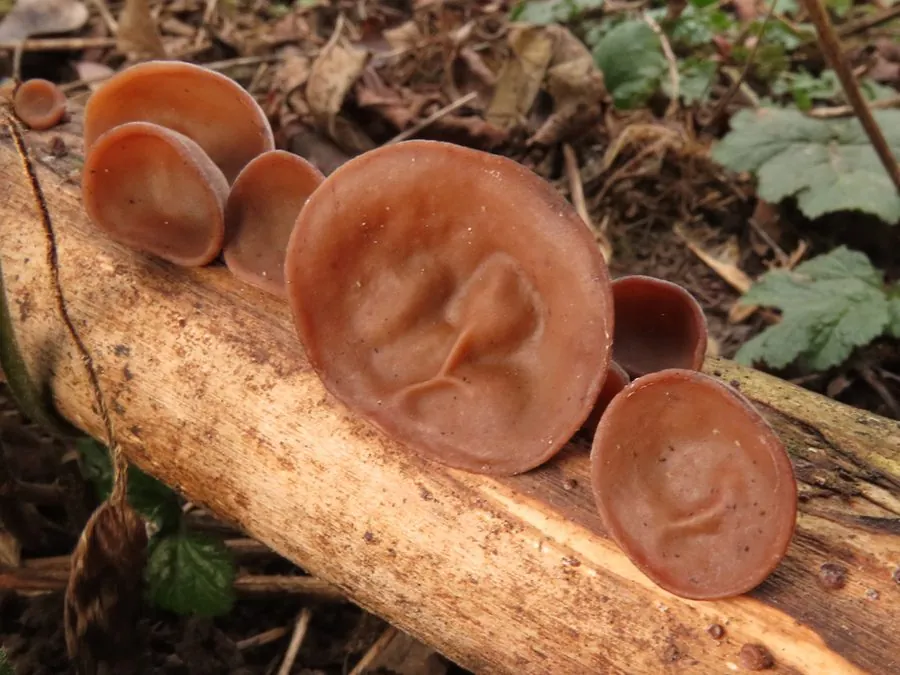

真菌 · 真菌界
木耳 Auricularia auricula-judae

木耳子实体形如人耳，质地胶质柔韧，可鲜食或干制，是传统的食用菌与药用菌，富含膳食纤维和木耳多糖。
- 分类
- 门担子菌门纲伞菌纲目木耳目科木耳科属木耳属
- 栖息环境
- 阔叶树枯倒木与人工菌袋，喜温暖湿润、散射光环境
- 地理分布
- 中国东北、华中、西南及东亚各地，现广泛人工栽培
- 保护级别
- 暂无评估（栽培食用菌）
物种志
木耳是担子菌门木耳目的木腐真菌，子实体呈耳状、杯状或叶状，直径 3–12 cm，鲜时柔软胶质，背面有短绒毛，腹面平滑或有脉纹，颜色从红褐到黑褐色，干后收缩变硬、呈黑色。子实层生于腹面，担孢子肾形，孢子印白色。木耳的质地富有弹性，吸水后能膨胀数倍，是它最直观的特征。
木耳野生于栎、榆、杨等阔叶树的枯倒木上，靠分解木材中的纤维素和木质素生长。中国是木耳的主要生产国，东北、湖北、四川等地栽培历史悠久，传统用段木栽培，现代多用木屑菌袋。木耳营养丰富，含蛋白质、膳食纤维、多种矿物质和多糖类物质，其中膳食纤维和木耳多糖含量较高；中医认为木耳有润肺、凉血、止血之效，但木耳有活血作用，出血性疾病患者应慎食。
形态与习性
- 子实体耳状，直径 3–12 cm，背面有短绒毛
- 质地胶质柔韧，干后收缩变硬
- 孢子印白色
- 栽培段木或木屑菌袋栽培
- 采收期耳片舒展、边缘变薄时
- 主要成分膳食纤维与木耳多糖
- 注意有活血作用，出血性疾病患者慎食
趣味知识
- 木耳泡发后体积可膨胀好几倍，吸水量很大。
- 干木耳背面有细绒毛，腹面平滑，这是辨别品种的特征之一。
- 木耳有活血作用，正在出血或准备手术的人不宜多吃。